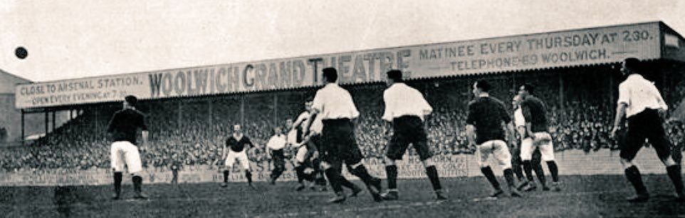
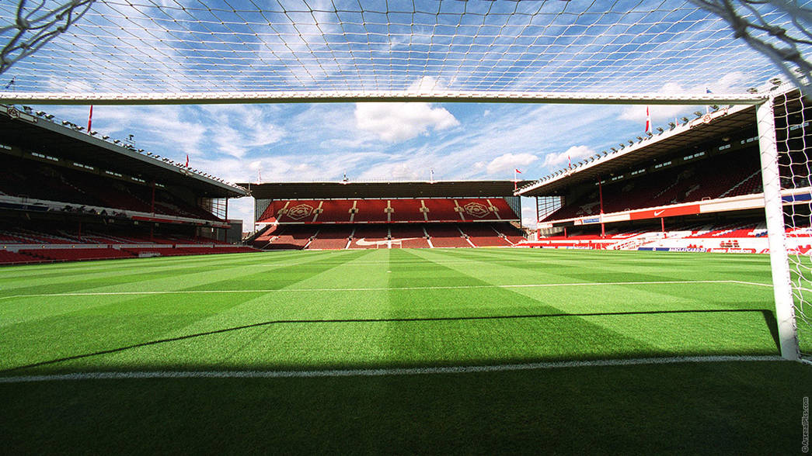
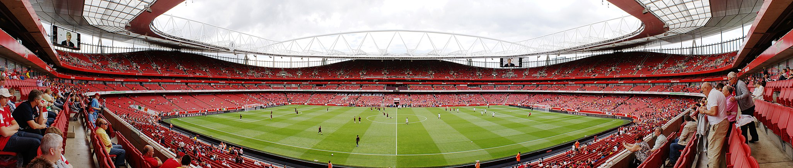

Arsenal F.C
Arsenal Football Club is an English professional football club based
in Islington, London. Arsenal plays in the Premier League, the top
flight of English football. The club has won 13 league titles
(including one unbeaten title), a record 14 FA Cups, two League
Cups, 16 FA Community Shields, one European Cup Winners' Cup, and
one Inter-Cities Fairs Cup. In terms of trophies won, it is the
third-most successful club in English football. Arsenal was the
first club from the South of England to join the Football League in
1893, and they reached the First Division in 1904. Relegated only
once, in 1913, they continue the longest streak in the top division,
and have won the second-most top-flight matches in English football
history.In the 1930s, Arsenal won five League Championships and two
FA Cups, and another FA Cup and two Championships after the war. In
1970–71, they won their first League and FA Cup Double. Between 1989
and 2005, they won five League titles and five FA Cups, including
two more Doubles. They completed the 20th century with the highest
average league position. Between 1998 and 2017, Arsenal qualified
for the UEFA Champions League for nineteen consecutive seasons.
Herbert Chapman, who changed the fortunes of Arsenal forever, won
the club its first silverware, and his legacy led the club to
dominate the 1930s decade; Chapman, however, died of pneumonia in
1934, aged 55. He helped introduce the WM formation, floodlights,
and shirt numbers; he also added the white sleeves and brighter red
to the club's jersey. Arsène Wenger is the longest-serving manager
and won the most trophies. He won a record seven FA Cups, and his
title-winning team set an English record for the longest top-flight
unbeaten league run at 49 games between 2003 and 2004, receiving the
nickname The Invincibles. In 1886, munitions workers at the Royal
Arsenal in Woolwich founded the club as Dial Square. In 1913 the
club crossed the city to Arsenal Stadium in Highbury, becoming close
neighbours of Tottenham Hotspur, and creating the North London
derby. In 2006, they moved to the nearby Emirates Stadium. With an
annual revenue of £340.3m in the 2019–20 season, Arsenal was
estimated to be worth US$2.68 billion by Forbes, making it the
world's eighth most valuable club, while it is one of the most
followed on social media. The motto of the club has long been
Victoria Concordia Crescit, Latin for "Victory Through Harmony".
History
In October 1886, Scotsman David Danskin and fifteen fellow munitions
workers in Woolwich formed Dial Square Football Club, named after a
workshop at the heart of the Royal Arsenal complex. Each member
contributed sixpence and Danskin also added three shillings to help
form the club.Dial Square played their first match on 11 December
1886 against Eastern Wanderers and won 6–0. The club renamed to
Royal Arsenal a month later, and its first home was Plumstead
Common, though they spent most of their time playing at the Manor
Ground. Their first trophies were the Kent Senior Cup and London
Charity Cup in 1889–90 and the London Senior Cup in 1890–91; these
were the only county association trophies Arsenal won during their
time in South East London. In 1891, Royal Arsenal became the first
London club to turn professional. Royal Arsenal renamed for a second
time upon becoming a limited liability company in 1893. They
registered their new name, Woolwich Arsenal, with The Football
League when the club ascended later that year. Woolwich Arsenal was
the first southern member of The Football League, starting out in
the Second Division and reaching the First Division in 1904. Falling
attendances, due to financial difficulties among the munitions
workers and the arrival of more accessible football clubs elsewhere
in the city, led the club close to bankruptcy by 1910. Businessmen
Henry Norris and William Hall became involved in the club, and
sought to move them elsewhere. In 1913, soon after relegation back
to the Second Division, the club moved across the river to the new
Arsenal Stadium in Highbury. In 1919, The Football League
controversially voted to promote The Arsenal, instead of relegated
local rivals Tottenham Hotspur, into the newly enlarged First
Division, despite only finishing fifth in the Second Division's last
pre-war season of 1914–15. Later that year, The Arsenal started
dropping "The" in official documents, gradually shifting its name
for the final time towards Arsenal, as it is generally known today.
Stadiums
Manor ground

Before joining the Football League, Arsenal played briefly on
Plumstead Common, then at the Manor Ground in Plumstead, then
spent three years between 1890 and 1893 at the nearby Invicta
Ground. Upon joining the Football League in 1893, the club
returned to the Manor Ground and installed stands and terracing,
upgrading it from just a field. Arsenal continued to play their
home games there for the next twenty years (with two exceptions in
the 1894–95 season), until the move to north London in 1913.
Highbury

Highbury, Arsenal Stadium was the club's home from September 1913
until May 2006. The original stadium was designed by the renowned
football architect Archibald Leitch, and had a design common to
many football grounds in the UK at the time, with a single covered
stand and three open-air banks of terracing.[28] The entire
stadium was given a massive overhaul in the 1930s: new Art Deco
West and East stands were constructed, opening in 1932 and 1936
respectively, and a roof was added to the North Bank terrace,
which was bombed during the Second World War and not restored
until 1954.[28] Highbury could hold more than 60,000 spectators at
its peak, and had a capacity of 57,000 until the early 1990s. The
Taylor Report and Premier League regulations obliged Arsenal to
convert Highbury to an all-seater stadium in time for the 1993–94
season, thus reducing the capacity to 38,419 seated
spectators.[119] This capacity had to be reduced further during
Champions League matches to accommodate additional advertising
boards, so much so that for two seasons, from 1998 to 2000,
Arsenal played Champions League home matches at Wembley, which
could house more than 70,000 spectators.[120]
Emirates stadium

After considering various options, in 2000 Arsenal proposed
building a new 60,361-capacity stadium at Ashburton Grove, since
named the Emirates Stadium, about 500 metres south-west of
Highbury.[122] The project was initially delayed by red tape and
rising costs,[123] and construction was completed in July 2006, in
time for the start of the 2006–07 season.[124] The stadium was
named after its sponsors, the airline company Emirates, with whom
the club signed the largest sponsorship deal in English football
history, worth around £100 million.[125] Some fans referred to the
ground as Ashburton Grove, or the Grove, as they did not agree
with corporate sponsorship of stadium names.[126] The stadium will
be officially known as Emirates Stadium until at least 2028, and
the airline will be the club's shirt sponsor until at least
2024.[127][128] From the start of the 2010–11 season on, the
stands of the stadium have been officially known as North Bank,
East Stand, West Stand and Clock end.[129] The capacity of the
Emirates now stands at 60,704.[130]